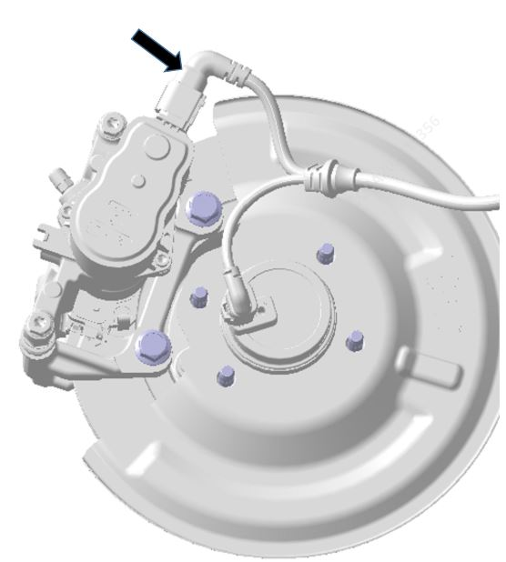
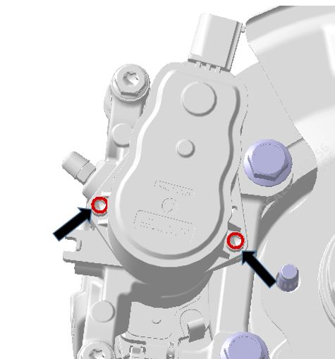

1. С помощью диагностического прибора перейти в: Диагностический прибор > Диагностика автомобиля > Интегрированный модуль управления тормозной системой IBCU > Специальные функции > Выполнить перевод электронного суппорта в режим обслуживания. Вход в режим обслуживания
2. Отсоединить электрический разъем электродвигателя суппорта.

3. С помощью ключа с внутренним шестигранником на 5# выкрутить два винта. Момент затяжки: 8 - 13 N.m

Установка
Установка выполняется в порядке, обратном снятию.
С помощью диагностического прибора выйти из диагностического режима обслуживания.
Перезапустить автомобиль.
После замены электродвигателя необходимо перезапустить автомобиль, в противном случае загорится индикатор неисправности тормозной системы.